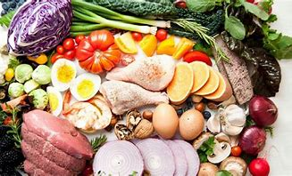

Que es la alimentacion?
La alimentación, por definición, es el conjunto de acciones mediante las cuales se proporcionan alimentos al organismo. Es decir, abarca la selección de los alimentos, el cocinado y su ingestión. La alimentación depende de muchas variantes, desde las necesidades individuales y la disponibilidad de alimentos hasta aspectos psicológicos y modas. Además de ser una necesidad vital para la supervivencia, la alimentación también es bienestar, cultura y placer.
La salud depende fundamentalmente de la variedad y tipos de alimentos que ingerimos. Los nutrientes presentes en los alimentos son fundamentales para la vida. Con un poco de información y conocimiento sobre estos nutrientes y la digestión, podemos alcanzar el equilibrio a través de la alimentación. Un equilibrio entre salud, bienestar y placer.
Es imprescindible una alimentación variada y saludable para poder estar bien nutridos.
Aunque lo parezca, no es lo mismo la definición de alimentación y de nutrición. La nutrición comprende todos los procesos con los que el organismo incorpora, transforma y utiliza las sustancias químicas (nutrientes) que contienen los alimentos. En todo caso, hoy nos centramos en lo que significa alimentación respecto a la nutrición y os damos 15 conceptos de alimentación para disfrutar de la comida al mismo tiempo que mejoramos nuestra calidad de vida.
- Tener clara la importancia de la alimentación dentro de un estilo de vida saludable
Está demostrado que algunas de las enfermedades actuales se pueden prevenir con unos hábitos alimentarios correctos y un estilo de vida más activo que incluye ejercicio y un correcto descanso
Sin embargo, ser conscientes de la importancia de los alimentos que ingerimos no significa obsesionarse con ello ni llevar un control férreo de todo lo que comemos, es importante disfrutar de la comida.

- Comer habitualmente en un ambiente tranquilo y relajado
Hay que desterrar hábitos como el de comer mientras trabajamos delante del ordenador o en cualquier otra tarea. Comer es importante y merece su espacio y tiempo, aunque sea corto.
- Comer sentados y en una buena posición
El bienestar a la hora de comer es fundamental para disfrutar de la comida y tener una buena digestión después. Por eso debemos permanecer bien erguidos y evitar aquellas prendas de ropaque puedan presionar en exceso el abdomen.
- Organizar y planificar las comidas
Con un menú semanal podemos distribuir los diferentes grupos de alimentos, tener un control sobre la variedad de la alimentación y planificar correctamente la compra para evitar el desperdicio de comida.